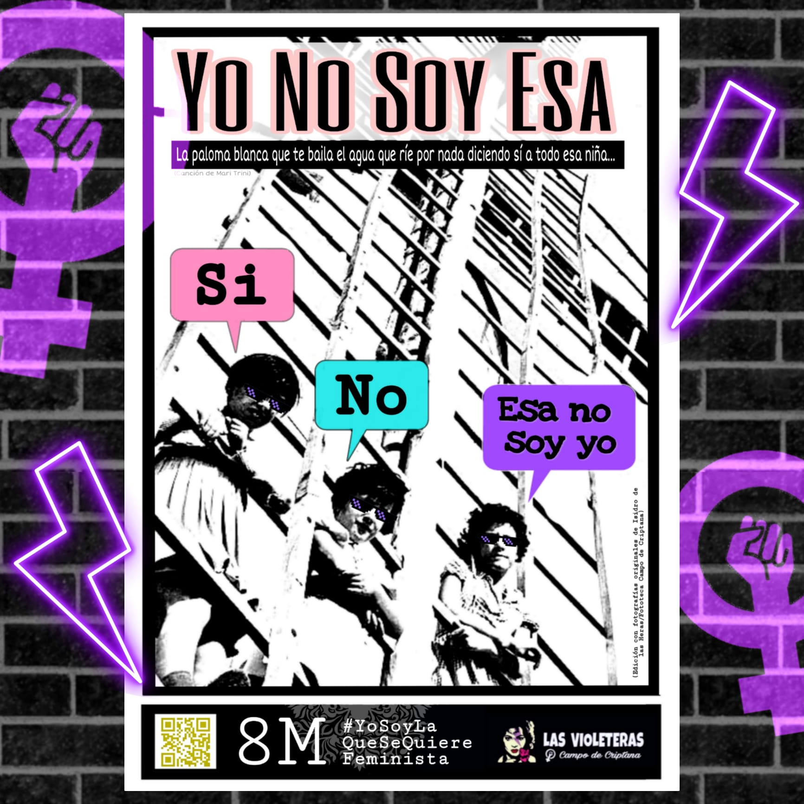
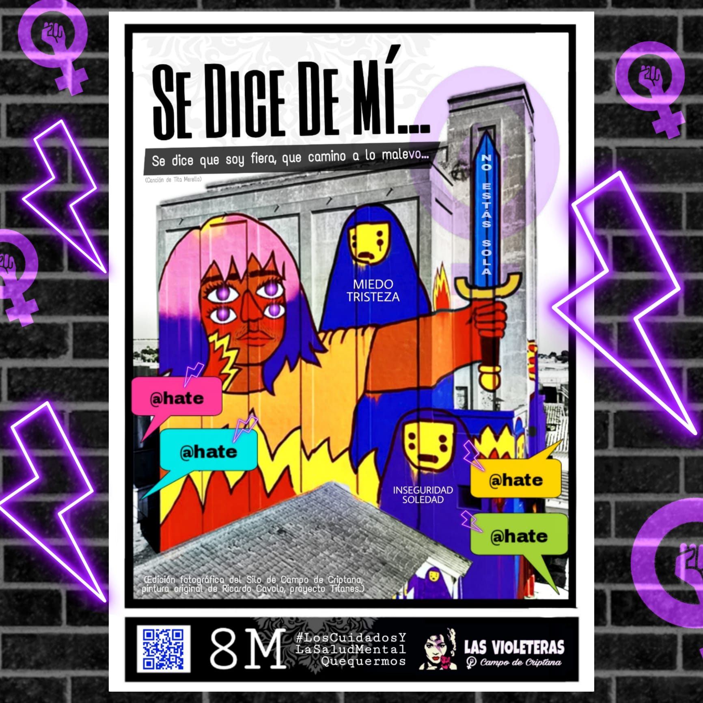
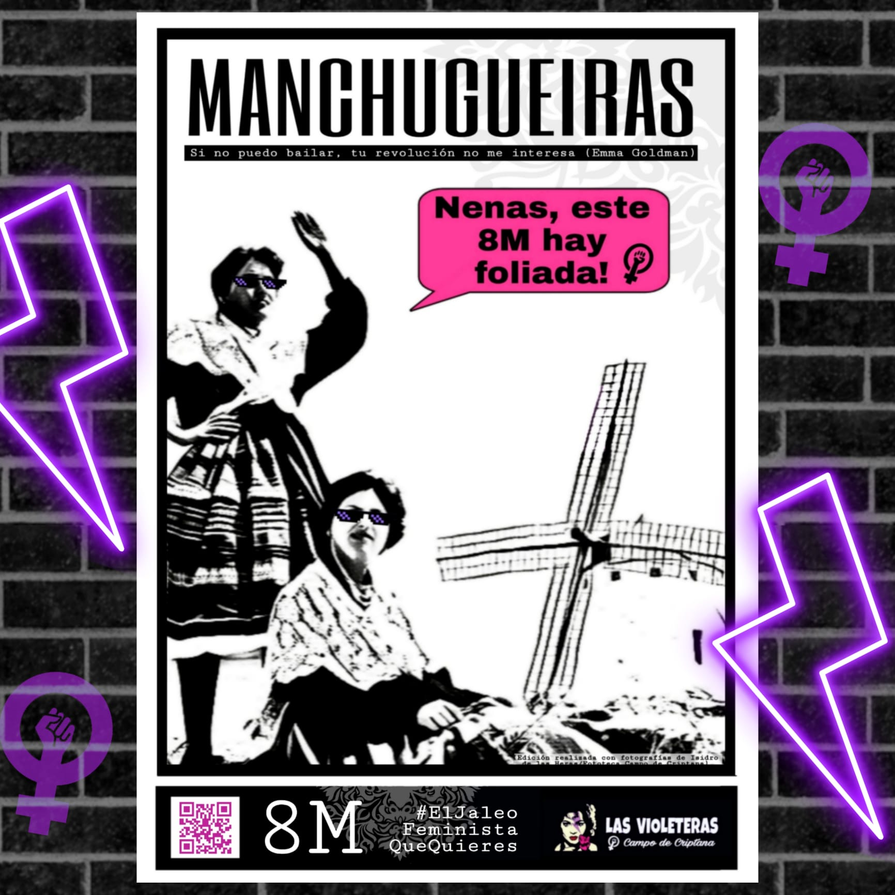
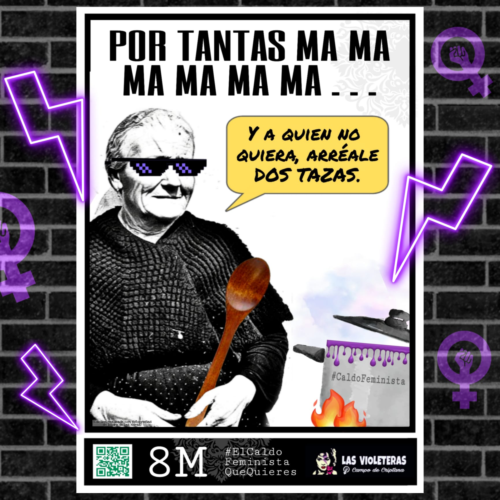

8M - La lucha de las mujeres en le medio rural
Por un feminismo de hermanas de tierra

Como cada año, las Violeteras de nuestro pueblo se movilizan este 8 de Marzo para visibilizar y denunciar el sometimiento de las mujeres por el patriarcado, un sometimiento que es aún mayor en el medio rural.
Este año, como manifiesto de la jornada se ha elegido un texto de Lucía López Marco y María Sánchez.
Por un feminismo de hermanas de tierra
La primavera se intuye, y hay una semilla que germina y que lucha por crecer. Sola, comienza a abrirse paso, rompiendo la tierra, poco a poco, al ritmo del sol, irá creciendo. Pero para nacer y crecer también necesita el agua. Y si no llega, luchará por encontrarla.
Hermana,
nosotras,
también somos así. Nos abrimos paso como las semillas. A primera vista parecen invisibles, pero que crecen con la fuerza de nuestras voces en un territorio lleno de vida que no deja de tejer comunidad gracias a nuestras manos y nuestras palabras.
También somos parte de la vida de nuestros pueblos: nana, raíz, latido. Y como esas semillas que se enganchan en la lana de las trashumantes para germinar a miles y miles de kilómetros de su lugar de origen, resistimos y luchamos. Y miramos a las que nos precedieron y sabemos porque no podemos callar más.
Dicen que el 8 de marzo es de todas.
Pero lo que se refleja en los medios y en las redes no suele ser así. Porque muchas veces nos quedamos en la superficie y no vamos más allá de las ciudades, y de nombrar y celebrar a mujeres de los círculos estrictamente culturales.
¿Dónde quedamos las mujeres rurales? ¿Cómo ? ¿Cómo sacar de la umbría lo que no se conoce? ¿Cómo valorar unas manos que trabajan pero que, a vista de muchos, siguen siendo invisibles?
Las mujeres rurales, en este sistema capitalista, tecnocrático y urbanocéntrico, hemos sido siempre doblemente marginadas, doblemente olvidadas: por ser mujeres y por ser rurales.
Mujeres rurales,
hermanas de un hijo único, mujeres de, hijas de, hermanas de, nietas de, sobrinas de…
Siempre en la sombra, pero llevando todo el peso. Dueñas de nada, pero encargadas de todo.
Ya va siendo hora de rendir homenaje al trabajo y al sudor de mujeres como nuestras abuelas y nuestras madres, que tanto trabajaron la tierra y que cargaron con la mochila a la vez de los cuidados domésticos a la sombra, en el más absoluto silencio.
Hay que nombrarlas una a una.
Servir de altavoz para que sus voces retumben.
Contar que también fueron: que son y serán mujeres fuertes de tierra que la mayoría de las veces no pudieron elegir ni decidir. Que a base de renuncias, creciendo en una casa construida sobre cimientos de desigualdad y machismo, nos abrieron vereda a las demás.
Y no:
no nos olvidamos tampoco de aquellas que hoy, aunque quisieran, no pueden hacer huelga ni venir a la manifestación.
Porque seguimos siendo nosotras las que cuidamos: de las personas, de los rebaños, de los cultivos, de los campos, los bosques y de los pueblos. Y — cómo no — no podemos olvidar a todas esas compañeras migrantes que trabajan en situaciones precarias llenas de abusos y machismo en nuestro territorio. Ellas, mujeres, rurales y migrantes, triplemente marginadas.
Insistimos.
Ya es hora de cambiar la forma de mirar.
Siempre estuvimos aquí. Trabajando la tierra, cuidando, siendo la raíz invisible pero esencial que hacía que el hogar siguiera en pie.
A pesar de lo difícil que lo tuvieron las que nos precedieron y de lo difícil que sigue siendo ahora.
No, no necesitamos que nadie nos salve.
Queremos espacios y altavoces: Estamos aquí, estuvimos: queremos seguir estando.
Queremos que la Administración no piense solo en satisfacer las demandas de las ciudades, porque nosotras también necesitamos servicios básicos. Queremos poder decidir si irnos o quedarnos. Queremos dejar de ser ciudadanas de segunda. Queremos soberanía alimentaria, ganadería extensiva y agroecología. Queremos crear comunidades, mantenerlas, ayudarnos siempre las unas a las otras. Sentirnos reconocidas y respaldadas.
Y queremos ser un ejemplo para las niñas del futuro, sean o no nuestras hijas o nuestras nietas. Queremos decirles que esta también es su tierra. Que esta cultura llena de animales, árboles, territorios y personas también es de ellas. Que de aquí venimos y es hacia dónde vamos. Porque no nos queremos ir. Porque creemos que otras formas de vida, de relación y de producción son posibles, más allá de este sistema explotador, y que nuestros márgenes tienen mucho que enseñar y que nutrir.
auzolan en euskera,
a vecinal en aragonés,
facendera en leonés,
sestaferia en asturiano,
roga en gallego,
a tornallom en valenciano,
a cumuña en cántabro,
treball a jova en catalán,
a vediau en aranés …
Trabajos comunales, manos que cuidan y ayudan. Una forma natural de trabajo para realizar muchas labores del campo o del entorno rural, en general, que alimentaban y daban vida a nuestros pueblos.
Ahora, más que nunca, tenemos que recuperar estas palabras, y — sobre todo — dar vida de verdad a todo lo que estas palabras de nuestro territorio contienen.
Tenemos que seguir tejiendo redes en el medio rural, contar, hablar, alzar la voz, ayudarnos las unas a las otras. Formar parte de la raíz y de las ramas.
Porque nuestro territorio no está vacío, por más que os hayáis empeñado en vaciarlo.
Porque seguimos aquí, porque estamos vivas aquí.
Por un feminismo de todas,
por un feminismo de hermanas de tierra.




Las Violeteras
Asociación
Korova es un proyecto de centro sociocultural autogestionado en Campo de Criptana.